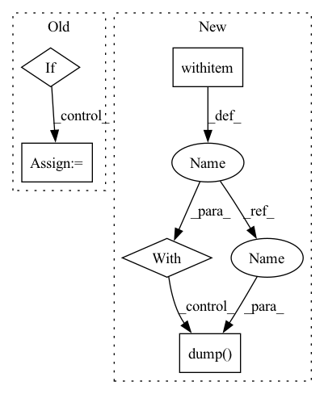

Pattern ID :11241
Before Change
//////-----------------------------------------------------------------------.
// DataParallel training option on multiple GPUs
if training_settings["DataParallel_training"] is True:
if torch.cuda.device_count() > 1 and len(training_settings["GPU_devices_ids"]) > 1:
model = nn.DataParallel(model, device_ids=[i for i in training_settings["GPU_devices_ids"]])
//////-----------------------------------------------------------------------.
//// Generate the (new) model name and its directories After Change
device = device)
// Save AR TrainingInfo
with open (os.path.join(exp_dir,"training_info/AR_TrainingInfo.pickle"), "wb") as handle:
pickle.dump( training_info, handle , protocol=pickle.HIGHEST_PROTOCOL)
// // Load AR TrainingInfo
// with open(os.path.join(exp_dir,"training_info/AR_TrainingInfo.pickle"), "rb") as handle:
// training_info = pickle.load(handle)In pattern: SUPERPATTERN
Frequency: 3
Non-data size: 5
Instances Fragment ID: 38353329
Project Name: deepsphere/deepsphere-weather
Commit Name: 14eabf4f5c77765b5ab05570869c3e150e2150d5
Time: 2021-02-21
Author: wentao.feng@epfl.ch
File Name: train.py
M Class Name: AnonimousClass
N Class Name: AnonimousClass
M Method Name: main(3)
N Method Name: main(3)
M Parent Class:
N Parent Class:
M File Name: train.py
N File Name: train.py
M Start Line: 109
M End Line: 269
N Start Line: 243
N End Line: 359
Before Change
def save_checkpoint_path(model_output_path: str, model: FlaxPreTrainedModel,
params: PyTree, gcloud_project: Optional[str]=None,
gcloud_token: Optional[Any]=None) -> None:
if model_output_path.startswith("gcs://"):
model_output_path = model_output_path[len("gcs://"):]
// save to tmp_dir
tmp_dir = tempfile.TemporaryDirectory()
model.save_pretrained(After Change
def save_checkpoint_path(model_output_path: str, params: PyTree,
gcloud_project: Optional[str]=None,
gcloud_token: Optional[Any]=None) -> None:
with open_pp (model_output_path, "wb", gcloud_project=gcloud_project, gcloud_token=gcloud_token) as f:
pkl.dump( params, f)
def delete_checkpoint(checkpoint_path: str, gcloud_project: Optional[str]=None, gcloud_token: Optional[Any]=None) -> None:
if checkpoint_path.startswith("gcs://"):
checkpoint_path = checkpoint_path[len("gcs://"):] Fragment ID: 38353331
Project Name: sea-snell/jaxseq
Commit Name: be37c42a4d4b3401e9e3f09ee4706d1e3720af45
Time: 2022-10-20
Author: sea_snell@icloud.com
File Name: src/seq2seq_train.py
M Class Name: AnonimousClass
N Class Name: AnonimousClass
M Method Name: save_checkpoint_path(4)
N Method Name: save_checkpoint_path(5)
M Parent Class:
N Parent Class:
M File Name: src/seq2seq_train.py
N File Name: src/seq2seq_train.py
M Start Line: 19
M End Line: 39
N Start Line: 23
N End Line: 25
Before Change
//////-----------------------------------------------------------------------.
// DataParallel training option on multiple GPUs
if training_settings["DataParallel_training"] is True:
if torch.cuda.device_count() > 1 and len(training_settings["GPU_devices_ids"]) > 1:
model = nn.DataParallel(model, device_ids=[i for i in training_settings["GPU_devices_ids"]])
//////-----------------------------------------------------------------------.
//// Generate the (new) model name and its directories After Change
device = device)
// Save AR TrainingInfo
with open (os.path.join(exp_dir,"training_info/AR_TrainingInfo.pickle"), "wb") as handle:
pickle.dump( training_info, handle, protocol=pickle.HIGHEST_PROTOCOL)
// // Load AR TrainingInfo
// with open(os.path.join(exp_dir,"training_info/AR_TrainingInfo.pickle"), "rb") as handle:
// training_info = pickle.load(handle) Fragment ID: 38353332
Project Name: deepsphere/deepsphere-weather
Commit Name: 14eabf4f5c77765b5ab05570869c3e150e2150d5
Time: 2021-02-21
Author: wentao.feng@epfl.ch
File Name: train.py
M Class Name: AnonimousClass
N Class Name: AnonimousClass
M Method Name: main(3)
N Method Name: main(3)
M Parent Class:
N Parent Class:
M File Name: train.py
N File Name: train.py
M Start Line: 109
M End Line: 269
N Start Line: 243
N End Line: 359
Before Change
stock symbols
global _HS_SYMBOLS
if _HS_SYMBOLS is None:
_res = set()
for _k, _v in (("ha", "ss"), ("sa", "sz"), ("gem", "sz")):
resp = requests.get(SYMBOLS_URL.format(s_type=_k))
_res |= set(After Change
with symbol_cache_path.open("rb") as fp:
cache_symbols = pickle.load(fp)
symbols |= cache_symbols
with symbol_cache_path .open("wb") as fp:
pickle.dump( symbols, fp)
_HS_SYMBOLS = sorted(list(symbols))
return _HS_SYMBOLS Fragment ID: 38353335
Project Name: microsoft/qlib
Commit Name: 5bca9d892aad7e59e44e4f4f522675c435b874c5
Time: 2020-10-20
Author: zhu.pengrong@foxmail.com
File Name: scripts/data_collector/utils.py
M Class Name: AnonimousClass
N Class Name: AnonimousClass
M Method Name: get_hs_stock_symbols(0)
N Method Name: get_hs_stock_symbols(0)
M Parent Class:
N Parent Class:
M File Name: scripts/data_collector/utils.py
N File Name: scripts/data_collector/utils.py
M Start Line: 57
M End Line: 68
N Start Line: 80
N End Line: 99